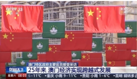
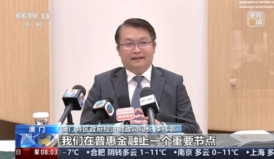

25年来内地对澳门地区进出口超4700亿元
来源：央视新闻|相关链接
澳门回归祖国25年来，内地与澳门的贸易规模持续增长，活力不断提升。
海关最新数据显示，澳门回归祖国25年来，内地对澳门地区进出口总值累计达4714.3亿元，年均增速达7.4%。年度贸易规模由1999年的48.7亿元增长至2023年的270.1亿元，增长超4.5倍。
拱北海关所属港珠澳大桥海关副关长 汪沛洋：两地贸易的产品结构更加优化。电动汽车、医药品等高技术、高价值产品比例不断提升。
自2020年8月港珠澳大桥珠澳货运通道开通以来，经大桥口岸对澳门地区进出口635.8亿元，年均增速达36.1%。
从港珠澳大桥的开通，到“澳车北上”政策的落地，再到横琴粤澳深度合作区的建设发展，内地在促进澳门经济适度多元发展方面的作用持续发挥，经贸往来更加富有活力。
回归祖国25年来，澳门经济实现跨越式发展
来源：央视新闻|相关链接
 
澳门回归祖国25年来，向世界展示了具有澳门特色“一国两制”的成功实践。澳门特区政府主要官员近日接受记者采访时表示，25年来，澳门经济快速增长、民生持续改善，在融入国家发展大局的进程中，澳门也迎来愈加广阔的发展天地。
大三巴牌坊，游客如织，“热烈庆祝中华人民共和国澳门特别行政区成立25周年”的标志吸引游客纷纷留影纪念。澳门街头，洋溢着迎接特区25岁生日的喜庆氛围。
澳门拥有丰富的历史建筑、多元美食、精彩演出等等，向世界展示独特魅力，人口虽然仅有60多万，但年接待旅客量数千万人次。
澳门特区政府经济财政司司长 李伟农：到11月中旬，我们已有超过3000万人次的游客来到澳门。现在在澳门基本上不要用现金，这也是五年来我们在普惠金融上的一个重要节点，内地的电子支付工具在这里都非常方便。另外，澳门在2023年和2024年连续被评选为“最佳亚洲会议城市”以及“最佳会议商务城市”，体现了澳门在商务旅游以及会展方面的优质服务获得了国际的认可。
澳门加快推进经济适度多元发展，明确了“1+4”产业发展方向：
· “1”是按照建设世界旅游休闲中心的目标要求，做优做精做强综合旅游休闲业；
· “4”是持续推动大健康、现代金融、高新技术、会展商贸和文化体育等四大重点产业发展。
澳门特区政府行政法务司司长 张永春：在“一国两制”之下，澳门具有一些独特的优势，例如澳门经济开放程度高，在贸易、税收、金融、货币及民航等方面可以自行制定政策，有单独的关税区地位，旅游文化资源多，与葡语国家联系密切，基于这些优势，澳门把自身所长和国家所需结合起来，取得了实实在在的进展。事实证明，“一国”原则坚持得越好，“两制”的便利就发挥得越好。
回归祖国前的澳门，经济连续多年负增长。而今年25岁的澳门特区，已经摘下多项引以为傲的国际桂冠。比如在2024年《福布斯》杂志公布的最富有国家（地区）排名中，澳门居全球第二、亚洲第一。
· 1999年至2023年，澳门人均GDP由1.5万美元增至6.9万美元。在实现经济跨越式发展的同时，澳门居民获得感和幸福感不断增强。澳门初级卫生保健体系被世界卫生组织评为“太平洋地区典范”，澳门全面实施15年免费教育，教育福利在亚洲遥遥领先。
· 2019年2月，《粤港澳大湾区发展规划纲要》出台，明确澳门作为大湾区四大中心城市之一和区域发展核心引擎。
· 2021年9月，横琴粤澳深度合作区挂牌成立，打开“琴澳一体化”发展新篇章。
澳门特区政府行政法务司司长 张永春：澳门地域比较小，制约了澳门的发展。澳门回归祖国之后，中央先后授权澳门对横琴岛澳门大学校区、横琴口岸澳方口岸区以及相关的延伸区进行管辖。澳门特区的管辖面积和发展空间不断扩大，促进了澳门经济的发展，也便利了澳门居民的生活。特区政府高度重视参与大湾区以及横琴粤澳深度合作区的建设，如何加强机制对接和规则衔接，是我们的一项重要工作。
澳门特区政府经济财政司司长 李伟农：发挥好自身优势，融入国家发展大局是澳门的重要任务，把澳门国际大都市“金名片”擦得更亮。
澳门回归祖国25周年｜融入中国式现代化 实现自身更好发展——澳门与祖国共享发展繁荣纪事
来源：新华社|相关链接


新华社澳门12月15日电 题：融入中国式现代化 实现自身更好发展——澳门与祖国共享发展繁荣纪事
新华社记者郭鑫、周文其、李寒芳
澳门名胜大三巴牌坊前，游人往来如织，在镜头下定格美好的旅行记忆；金光会展中心和综艺馆内，各式展览、演出轮番亮相，吸引满满人气；青年创业孵化中心里，年轻创客围坐一起，追逐梦想的脚步从未停止……时值冬季，这座中国南海边的古城焕发着勃勃生机。
回归祖国25年来，在“一国两制”方针指引下，在中央政府和祖国内地的大力支持下，澳门实现向现代化国际都市的华丽转身。澳门特别行政区政府与社会各界携手并进，积极探索适合自身的发展路径，在经济、民生等领域取得显著成就。与此同步，澳门不断深化与祖国内地的交流合作，深度融入国家发展大局，在以中国式现代化全面推进强国建设、民族复兴的时代伟业中，与祖国同进步、共繁荣，展现前所未有的豪迈情怀。
背靠祖国，经济实现跨越式发展
站在澳门新城A区眺望，毗邻港珠澳大桥，一座崭新的桥梁——澳门大桥在澳氹海面上腾空而起。
两个多月前，这一澳门首条双向八车道跨海大桥建成通车，成为连接澳门半岛和氹仔的第四条跨海大桥，不仅便利了民众出行，也更加畅通了澳门的经济血脉。
回归前，澳门基础设施建设滞后。如今，轻轨穿梭于城区之间，高等级公路四通八达，跨海大桥雄伟壮观，旅游塔、中葡综合体等地标建筑鳞次栉比。它们不仅构成了澳门的新景观，更见证了这座城市的发展繁荣。
回归之初，澳门本地生产总值为519亿澳门元（1澳门元约合0.12美元），2023年已增长到近3795亿澳门元。2023年底，澳门居民存款总额逾7000亿澳门元，较1999年增长8倍多。25年间，澳门从一座寂静冷清的海滨小城跃升成为亚洲最富裕的城市之一。
经济稳步增长的同时，澳门逐渐摆脱博彩“一业独大”，产业结构迈向多元、协调、可持续，发展脚步更加扎实有力。
“在过去25年里，澳门在‘一国两制’方针下取得了显著发展。”澳门特别行政区行政长官贺一诚说，经济适度多元的重点产业占总体经济的比重逐步上升，经济结构日趋多元稳健。
在特色金融领域，澳门持续发力，与横琴及大湾区其他城市金融市场的互联互通不断加深，跨境金融服务持续优化，资金跨境流动渠道更加畅通。澳门凭借得天独厚的优势，积极扮演中国对外合作“精准联系人”角色，在共建“一带一路”中发挥不可或缺的节点作用。
中西交融的文化、琳琅满目的美食、别样风情的建筑……独具特色的旅游业是澳门经济适度多元发展的一个重要方面，特区政府致力于向世界展现澳门魅力，吸引海内外游客前来感受这座城市的深厚底蕴。
1999年，仅700万人次旅客访澳，而今年截至12月7日，这一数字已达3254.5万。如今，澳门是全球世界文化遗产最集中的城市之一，正着力打造世界旅游休闲中心。在中国旅游研究院2024年第一季度调查中，澳门获评内地出境旅游者最满意的目的地。
本月初，面积9.4万平方米的“澳门户外表演区”在氹仔试营运。这里将作为大型演艺活动场地，舞台跨度可达100米，容纳观众超5万人。这是澳门打造“演艺之都”的最新举措。
“近几年澳门演出活动非常多，不少大型演唱会选在澳门举办。无论软件还是硬件，澳门都非常适合办演出。”澳门歌手刘乃奇兴奋地说。今年“湾区升明月”“Time Music时光音乐演唱会”等大型演出在澳门举行，他都有幸参加。“现在很多内地和海外游客来澳门，就是专门为了看演唱会。”
澳门国际幻彩大巡游、澳门艺术节、中葡文化艺术节等活动吸引八方游客，格兰披治大赛车、澳门国际马拉松、澳门国际乒联世界杯等赛事精彩纷呈……澳门通过举办文化艺术节、展览、体育赛事等活动，擦亮国际大都市的“金名片”，在推动中外文化交流的同时也带旺了人气和消费。澳门特区政府数据显示，2023年，政府及民间举办的各项艺文活动参与人次接近2000万，综合度假休闲企业大型演唱会等活动观众达100万人次，产生约11亿澳门元票房。
过去几年，尽管遭遇疫情冲击，但澳门特区政府及时出台一系列举措推动经济恢复向好。今年前三季度，澳门本地生产总值达3010亿澳门元，按年实质增长11.5%。
2023年11月，澳门特区政府公布了《澳门特别行政区经济适度多元发展规划（2024—2028年）》，围绕“一中心、一平台、一基地”建设目标，提出“1+4”经济适度多元发展策略，从政策、人力、财力等方面多管齐下，推动重点产业板块快速发展。这是澳门历史上首个全面系统的产业发展规划。
数字是最有力的证明：非博彩业在澳门本地生产总值中的比重正逐渐提升，到2023年已超过六成。
澳门作为开放程度极高的外向型微型经济体，资源禀赋缺乏，但回归祖国以来25年间，各项主要经济指标阔步迈入全球前列，民生福祉大大提升，创造了“澳门奇迹”。
“澳门加快经济适度多元发展，不仅提升自身经济实力和竞争力，更可在服务国家战略及国家高水平对外开放中发挥出更大作用。”澳门城市大学副校长叶桂平说。
共享时代机遇，更好融入国家大局
时近年末，澳门会计专业联会会长容永恩正筹划着2025年如何在横琴开展工作。今年11月1日起，关于港澳涉税专业人士在横琴粤澳深度合作区执业的政策正式实施，容永恩是首批取得执业资格证的人士。“我非常荣幸，将努力推动澳门会计界更深度参与深合区建设。”容永恩说。
回归祖国25年来，澳门创造了发展奇迹，离不开中央和祖国内地的大力支持。同时，澳门积极投身粤港澳大湾区建设，主动融入国家发展大局。
15年前，横琴开发因澳门而生，担负起促进澳门经济适度多元发展的使命。2021年《横琴粤澳深度合作区建设总体方案》出台，琴澳一体化加速推进。
截至2024年9月，在横琴生活居住的澳门居民达16539人，同比增长19.1%；澳企总数达6461家，比深合区成立时增长39.3%。
澳门特区政府经济财政司司长李伟农说：“横琴在未来将是澳门发展的重要推动力。”
粤港澳大湾区建设和高质量共建“一带一路”为澳门带来新的发展机遇。为此，澳门成立了融入国家发展工作委员会，推动与内地在经济、文化、社会等各方面深度合作。
澳门与粤港共同开发“一程多站”精品旅游路线，促进大湾区与葡语国家商贸合作，推动大湾区与世界各国开展文化交流……近5年来，澳门着眼“一中心、一平台、一基地”定位，积极参与大湾区建设和高质量共建“一带一路”，发挥海上丝绸之路重要节点功能。
在澳门融入国家发展大局的进程中实现个人发展，是许多澳门人的共同选择。
澳门青年创业孵化中心里，青年创业者聚在一起商讨业务，忙得不亦乐乎，一旁的展柜摆满了各种创新产品。加速器区、路演区、会议室……中心丰富有序的空间设置，为创客们搭建起成就梦想的舞台。
为配合特区政府的施政方针，澳门特区政府经济及科技发展局设立了青年创业孵化中心，已累计孵化项目500多个，服务澳门创业青年2600余名。
吴鸿祺是澳门博维智慧科技有限公司执行董事，当下正与团队全力攻克一项技术难关。从澳门大学计算机专业毕业后，他毅然放弃博彩业高薪吸引，选择自主创业，立志在科技领域深耕细作。
博维科技已为澳门特区政府、众多企业及高校提供了网络基建、信息安全服务，并成功建立了澳门首个24小时不间断的本地化网络安全运营中心。
吴鸿祺和同事用实际行动证明，澳门人完全可以通过自己的努力，助推澳门乃至国家的发展进步。
在实现自身发展的同时，澳门同胞始终心系祖国，致力以“澳门力量”参与国家建设，助力社会进步。
地处中国西南的贵州省从江县曾是国家扶贫开发工作重点县，教育基础设施薄弱等是制约当地发展的重要因素。2018年，澳门特区政府、澳门中联办与贵州省签署协议，开启澳门对口帮扶从江的历程。
实施对口帮扶以来，澳门集结多方力量，筹措数千万资金投入从江县的教育、医疗等民生领域，让当地群众受益。
澳门居民清晰认识到澳门发展离不开国家支持，年轻人分享新时代改革开放发展机遇，在成长中增强了对国家的归属感、对强国建设的参与感。
叶桂平明显感受到这种社会氛围。教学过程中，他发现越来越多澳门学生对横琴、大湾区以至内地其他地区的建设发展表现出浓厚兴趣。“他们积极关注深合区政策动态和产业发展，主动了解相关实习、就业和创业信息。”叶桂平说。
贡献澳门所长，助力中国式现代化。澳门创忆健康科技创始人黄茵回忆创业初期的选择时说，将国家发展大局和个人创业目标相结合，让她最终决定在横琴播种、扎根。
“我们搭建起澳门与内地优秀医药资源互通桥梁，借助澳门中葡商贸平台优势，将中医药产品与文化推广至葡语国家。”黄茵带领企业抢抓机遇，快速起飞。
澳门这座国际化都市以开放的营商环境，成为众多创业者心中的理想之地。中央政府的全力支持，特别是横琴粤澳深度合作区的成立，更为澳门发展插上了高飞的羽翼，提供了前所未有的广阔空间。
回归祖国25载，澳门特别行政区成就斐然。面对世界百年未有之大变局，澳门面临挑战依然很多，发展任务依然繁重。紧紧把握国家进一步全面深化改革的机遇，发挥粤港澳大湾区产业协同作用，加快推动高质量发展，以澳门所长助力推进中国式现代化，是摆在澳门特区政府和社会各界面前的必答题。
中共二十届三中全会对进一步全面深化改革、推进中国式现代化作出系统部署，强调发挥“一国两制”制度优势，健全香港、澳门在国家对外开放中更好发挥作用机制。
澳门特区政府政策研究和区域发展局局长张作文说，中共二十届三中全会明确提出深化粤港澳大湾区合作，强化规则衔接、机制对接。澳门特区政府也在不断推进这方面工作，“相信未来澳门与大湾区其他城市的合作将更加密切，融合程度会越来越深”。
“大湾区的发展，实际上就是大家要在一个共同平台上发挥各自优势。”澳门大学法学院教授骆伟建认为，具体到澳门，就是要进一步发挥“一国两制”优势，更好服务于国家现代化建设和区域合作发展，这要在实践中不断探索深化。
在多元合作方面，澳门持续展现开放姿态和广阔视野，通过泛珠合作、京澳合作、沪澳合作、苏澳合作等模式，推进与内地省份优势互补、协同发展，以更好丰富澳门产业元素、拓展经营空间、开拓产品市场，为经济发展注入新活力。
今天的澳门正处于经济转型关键期，经济适度多元和拓宽居民生活空间成为发展主轴。“国家正推进进一步全面深化改革，推进中国式现代化，这为澳门特别行政区未来发展创造了广泛的空间和机遇。”澳门特别行政区候任行政长官岑浩辉表示，澳门要利用特别行政区独特优势，在强国建设、民族复兴进程中更好地抓住机遇，服务国家发展大局，助力国家现代化建设。
夜幕中，妈阁庙古朴静谧，与不远处横琴一侧的灯火呼应着，绘就一幅古老与现代交织的画卷。澳门这颗东西方文化荟萃的南海明珠，正以时不我待的精神，推进以自身所长服务国家所需，发挥“一国两制”制度优势助力中国式现代化，在波澜壮阔的新时代巨流中展现弄潮儿的矫健身姿。